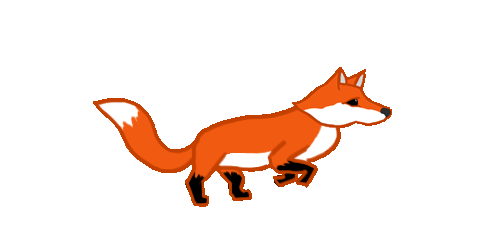
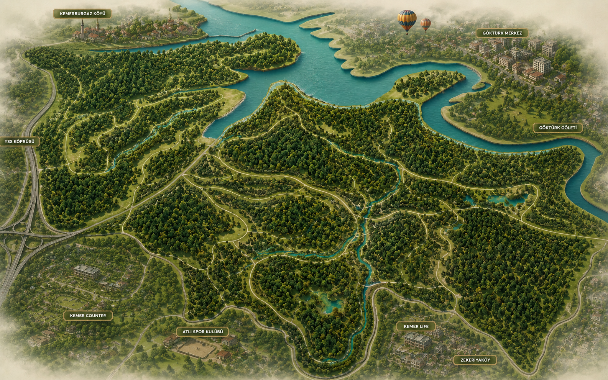
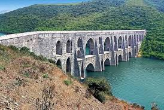
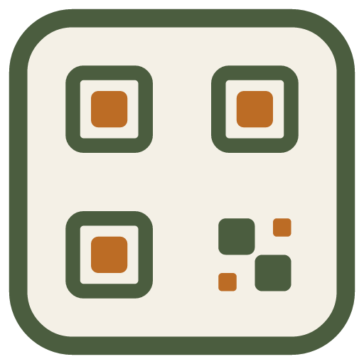

Açıklama
Doğa ve Tarih Notu
3 sorudan 3 tanesini doğru bildin!
Orman seni bekliyor! Biraz dinlenip maceraya baştan başlayabilirsin.

Kemerburgaz Kent Ormanı'nın 10 etabını baştan başa tamamlayarak 'Doğa ve Tarih Muhafızı' unvanına hak kazandın!
Kampını geliştirerek koşularda avantaj sağla, yeteneklerini güçlendir ve rekorları kır!
Kemerburgaz Kent Ormanı işletmelerindeki ahşap totem veya afişlerde yer alan QR kodu vizör içine hizalayın.
Orman parkurunda güvenle ilerlemek için temel koşu hareketlerini öğren:
Ekrana dokun, yukarı kaydır veya klavyede Boşluk / Yukarı Ok tuşuna basarak kütük ve kaya engellerinin üzerinden atla!
Ekranı aşağı doğru kaydır veya klavyede Aşağı Ok / S tuşuna basarak asılı macera halatlarının altından eğilerek kay!
Palamutları topla, hedef puana ulaş! Yeni etaplar, İBB şapka, yelek, pantolon kostümleri ve efsanevi kahramanların kilitlerini aç!
Puan tablosunda canlı sıralamanı görmek ve ormandaki ödülleri kazanmak için kaşif adını yaz ve yoldaşını seç:
Ses, müzik ve oyun tercihlerinizi buradan kolayca yönetebilirsiniz.
Ormanda engelleri aşan, doğa sorularını bilen ve altınları toplayan en iyi kaşifler:
